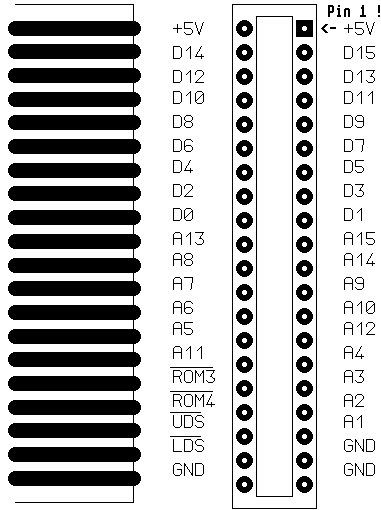

Previous
Next
TOC
Die ROMport Buchse des ATARI
1 +5V DC
11 Datenbit
6
21 Adressbit
8
31 ROMselect 3
2 +5V DC
12 Datenbit
7
22 Adressbit 14
32 Adressbit 3
3 Datenbit 14
13 Datenbit
4
23 Adressbit
7
33 ROMselect 4
4 Datenbit 15
14 Datenbit
5
24 Adressbit
9
34 Adressbit 2
5 Datenbit 12
15 Datenbit
2
25 Adressbit
6
35 Upper Data Strobe
6 Datenbit 13
16 Datenbit
3
26 Adressbit 10
36 Adressbit 1
7 Datenbit 10
17 Datenbit
0
27 Adressbit
5
37 Lower Data Strobe
8 Datenbit 11
18 Datenbit
1
28 Adressbit 12
38 Ground
9 Datenbit
8
19 Adressbit 13
29 Adressbit 11
39 Ground
10 Datenbit
9
20 Adressbit 15
30 Adressbit
4
40 Ground

Kapitel Die ROMport Buchse des ATARI, Seite 1